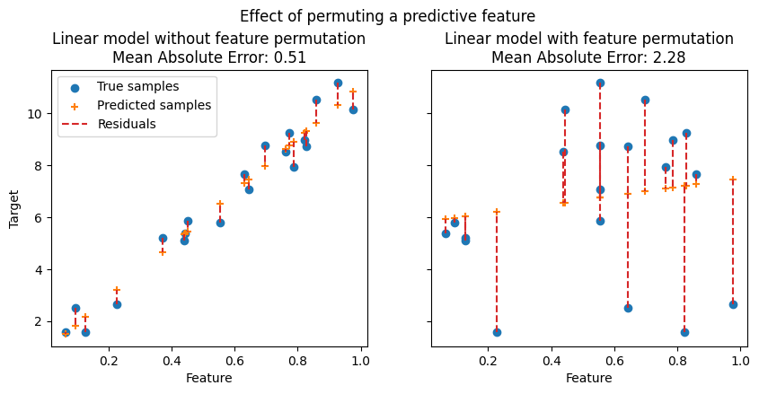
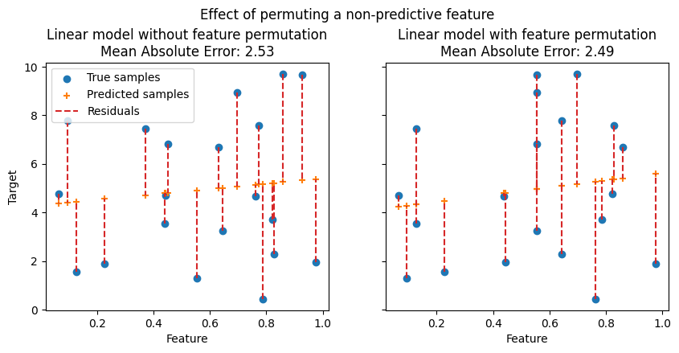

4.2. Permutation feature importance#
Permutation feature importance is a model inspection technique that measures the contribution of each feature to a fitted model’s statistical performance on a given tabular dataset. This technique is particularly useful for non-linear or opaque estimators, and involves randomly shuffling the values of a single feature and observing the resulting degradation of the model’s score [1]. By breaking the relationship between the feature and the target, we determine how much the model relies on such particular feature.
In the following figures, we observe the effect of permuting features on the correlation between the feature and the target and consequently on the model statistical performance.
 On the top figure, we observe that permuting a predictive feature breaks the correlation between the feature and the target, and consequently the model statistical performance decreases. On the bottom figure, we observe that permuting a non-predictive feature does not significantly degrade the model statistical performance.
One key advantage of permutation feature importance is that it is model-agnostic, i.e. it can be applied to any fitted estimator. Moreover, it can be calculated multiple times with different permutations of the feature, further providing a measure of the variance in the estimated feature importances for the specific trained model.
The figure below shows the permutation feature importance of a
RandomForestClassifier trained on an augmented
version of the titanic dataset that contains a random_cat and a random_num
features, i.e. a categrical and a numerical feature that are not correlated in
any way with the target variable:
Warning
Features that are deemed of low importance for a bad model (low cross-validation score) could be very important for a good model. Therefore it is always important to evaluate the predictive power of a model using a held-out set (or better with cross-validation) prior to computing importances. Permutation importance does not reflect to the intrinsic predictive value of a feature by itself but how important this feature is for a particular model.
The permutation_importance function calculates the feature importance
of estimators for a given dataset. The n_repeats parameter sets the
number of times a feature is randomly shuffled and returns a sample of feature
importances.
Let’s consider the following trained regression model:
>>> from sklearn.datasets import load_diabetes
>>> from sklearn.model_selection import train_test_split
>>> from sklearn.linear_model import Ridge
>>> diabetes = load_diabetes()
>>> X_train, X_val, y_train, y_val = train_test_split(
... diabetes.data, diabetes.target, random_state=0)
...
>>> model = Ridge(alpha=1e-2).fit(X_train, y_train)
>>> model.score(X_val, y_val)
0.356...
Its validation performance, measured via the \(R^2\) score, is
significantly larger than the chance level. This makes it possible to use the
permutation_importance function to probe which features are most
predictive:
>>> from sklearn.inspection import permutation_importance
>>> r = permutation_importance(model, X_val, y_val,
... n_repeats=30,
... random_state=0)
...
>>> for i in r.importances_mean.argsort()[::-1]:
... if r.importances_mean[i] - 2 * r.importances_std[i] > 0:
... print(f"{diabetes.feature_names[i]:<8}"
... f"{r.importances_mean[i]:.3f}"
... f" +/- {r.importances_std[i]:.3f}")
...
s5 0.204 +/- 0.050
bmi 0.176 +/- 0.048
bp 0.088 +/- 0.033
sex 0.056 +/- 0.023
Note that the importance values for the top features represent a large fraction of the reference score of 0.356.
Permutation importances can be computed either on the training set or on a held-out testing or validation set. Using a held-out set makes it possible to highlight which features contribute the most to the generalization power of the inspected model. Features that are important on the training set but not on the held-out set might cause the model to overfit.
The permutation feature importance depends on the score function that is
specified with the scoring argument. This argument accepts multiple scorers,
which is more computationally efficient than sequentially calling
permutation_importance several times with a different scorer, as it
reuses model predictions.
Example of permutation feature importance using multiple scorers#
In the example below we use a list of metrics, but more input formats are possible, as documented in Using multiple metric evaluation.
>>> scoring = ['r2', 'neg_mean_absolute_percentage_error', 'neg_mean_squared_error']
>>> r_multi = permutation_importance(
... model, X_val, y_val, n_repeats=30, random_state=0, scoring=scoring)
...
>>> for metric in r_multi:
... print(f"{metric}")
... r = r_multi[metric]
... for i in r.importances_mean.argsort()[::-1]:
... if r.importances_mean[i] - 2 * r.importances_std[i] > 0:
... print(f" {diabetes.feature_names[i]:<8}"
... f"{r.importances_mean[i]:.3f}"
... f" +/- {r.importances_std[i]:.3f}")
...
r2
s5 0.204 +/- 0.050
bmi 0.176 +/- 0.048
bp 0.088 +/- 0.033
sex 0.056 +/- 0.023
neg_mean_absolute_percentage_error
s5 0.081 +/- 0.020
bmi 0.064 +/- 0.015
bp 0.029 +/- 0.010
neg_mean_squared_error
s5 1013.866 +/- 246.445
bmi 872.726 +/- 240.298
bp 438.663 +/- 163.022
sex 277.376 +/- 115.123
The ranking of the features is approximately the same for different metrics even if the scales of the importance values are very different. However, this is not guaranteed and different metrics might lead to significantly different feature importances, in particular for models trained for imbalanced classification problems, for which the choice of the classification metric can be critical.
4.2.1. Outline of the permutation importance algorithm#
Inputs: fitted predictive model \(m\), tabular dataset (training or validation) \(D\).
Compute the reference score \(s\) of the model \(m\) on data \(D\) (for instance the accuracy for a classifier or the \(R^2\) for a regressor).
For each feature \(j\) (column of \(D\)):
For each repetition \(k\) in \({1, ..., K}\):
Randomly shuffle column \(j\) of dataset \(D\) to generate a corrupted version of the data named \(\tilde{D}_{k,j}\).
Compute the score \(s_{k,j}\) of model \(m\) on corrupted data \(\tilde{D}_{k,j}\).
Compute importance \(i_j\) for feature \(f_j\) defined as:
\[i_j = s - \frac{1}{K} \sum_{k=1}^{K} s_{k,j}\]
4.2.2. Relation to impurity-based importance in trees#
Tree-based models provide an alternative measure of feature importances based on the mean decrease in impurity (MDI). Impurity is quantified by the splitting criterion of the decision trees (Gini, Log Loss or Mean Squared Error). However, this method can give high importance to features that may not be predictive on unseen data when the model is overfitting. Permutation-based feature importance, on the other hand, avoids this issue, since it can be computed on unseen data.
Furthermore, impurity-based feature importance for trees are strongly biased and favor high cardinality features (typically numerical features) over low cardinality features such as binary features or categorical variables with a small number of possible categories.
Permutation-based feature importances do not exhibit such a bias. Additionally, the permutation feature importance may be computed with any performance metric on the model predictions and can be used to analyze any model class (not just tree-based models).
The following example highlights the limitations of impurity-based feature importance in contrast to permutation-based feature importance: Permutation Importance vs Random Forest Feature Importance (MDI).